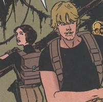
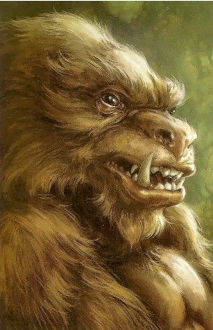
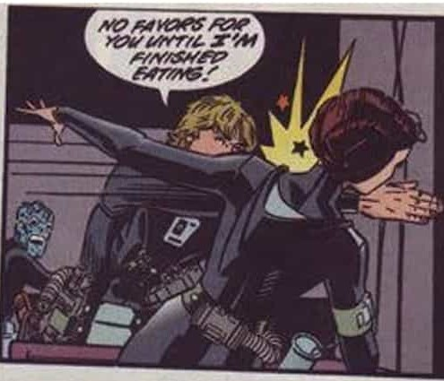
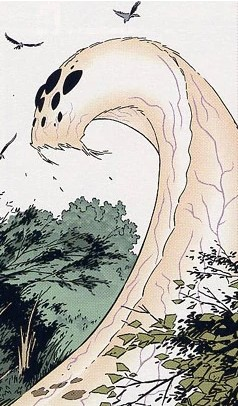
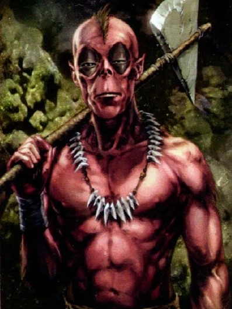
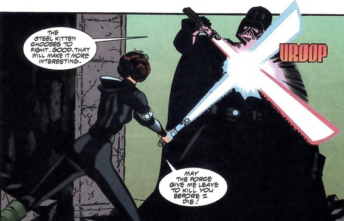

Luke Skywalker and Leia Organa are on a diplomatic mission to persuade the inhabitants of Circarpous IV to join the Rebel Alliance. Leia is experiencing issues with her ship so they locate the nearest planet with a service station, Circarpous V, known locally as Mimban. Upon entering the atmosphere of Mimban, they are caught in an electrical storm causing both planes in a swamp.
Luke and Leia go in search of a space. They find a town, where they meet an old woman named Halla. Halla senses Luke's force abilities and reveals to him that she possesses a shard of a Kyber crystal. She agrees to help Luke and Leia leave the planet, if they assist her in finding the whole crystal. Luke and Leia get caught in a bar fight and are enprisioned for their actions. The crystal shard and Luke's lightsaber are confiscated. Halla aids Luke and Leia's escape, along with two Yuzzem, Hin and Kee that had been detained in the same cell.
     The five go in seach of the Temple of Pomojema, the rumoured location of the Kyber crystal. On their way to the temple, they are chased by a wandrella, giant worm. Luke and Leia are seperated from the group. They climb into a deep well to escape. That get away from the wandrella but are stuck in the well. Their only other option is to go through a cavernous passage. Through the passage, Luke and Leia find an underground city.
They are ambushed by Coway natives. They are brought to the rest of tribe, where they are reunited with Halla's group who had also been captured. Luke challenges Coway's champion fighter for the freedom of the group. Luke defeats the fighter and secures the release of the group. While enjoying a feast, Luke senses the presence of Darth Vader. His suspicions are confirm by the Coway patrols as Imperials lead by Darth Vader attack. The Coway manage to hold strong and force the Imperials to retreat. Vader heads for the temple. The group steal an Imperial transport, that had been left behind, and race towards the temple.
Luke and the group reach the temple before Darth Vader. As they search the temple for the Kyber crystal, Vader arrives and drops rubble on Luke, incapacitating him. Vader claims to have killed the two Yuzzem. Leia picks up Luke's lightsaber and fights Vader, she is badly injured in the duel. A mortally wounded Hin, arrives and manages to free Luke from the rubble. Luke is inspired by the spirit of Ben Kenobi and the power of the Kyber crystal. Luke servers Vaders arm but Vader fights back and is close to delievering the final blow. Vader is knocked into a pit. The group leave the scene. Luke and Leia escape Mimban.